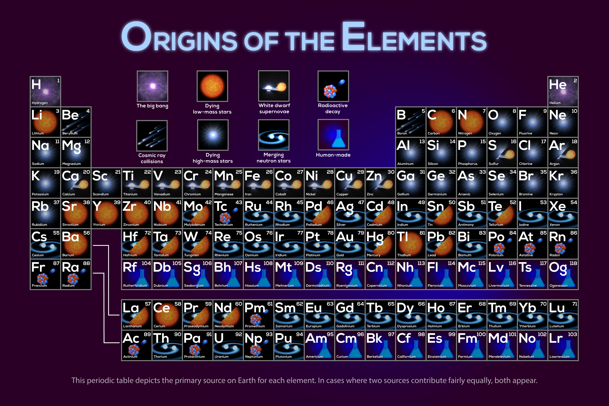
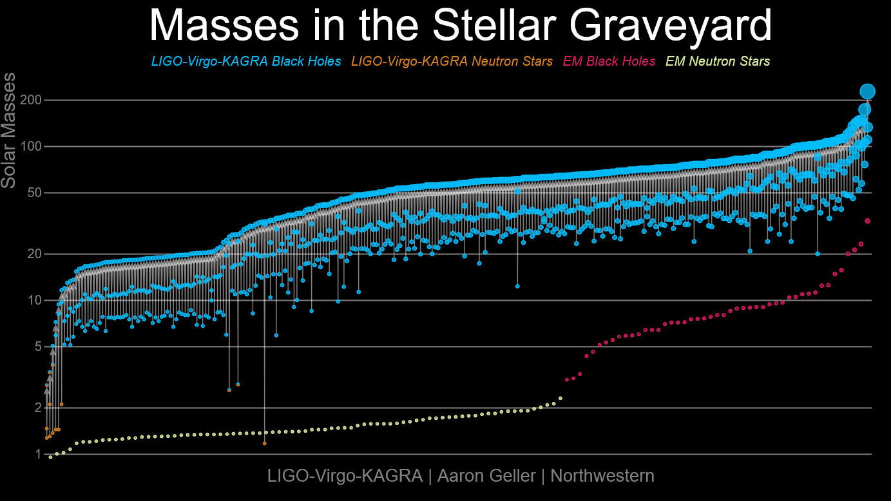
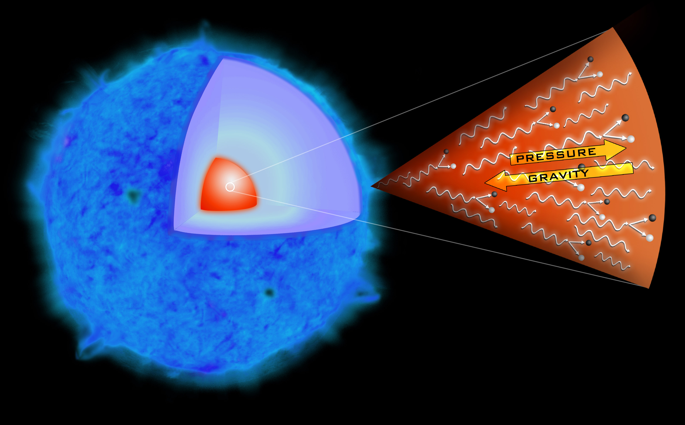
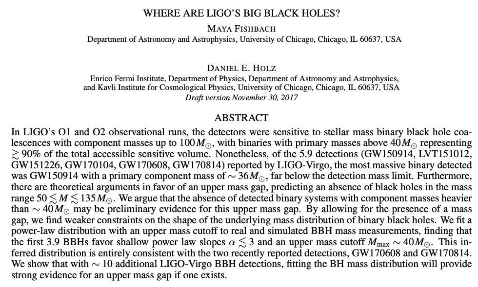
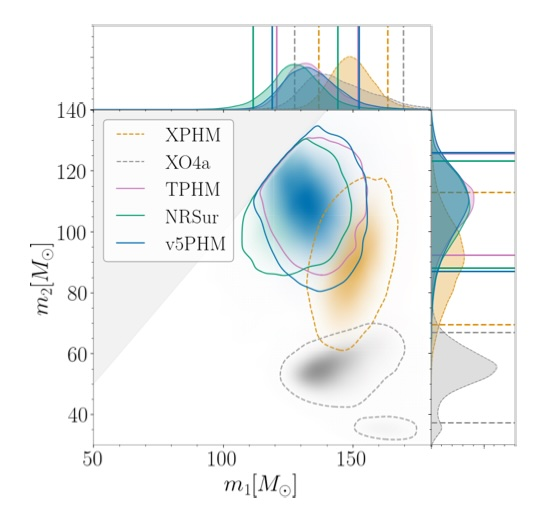
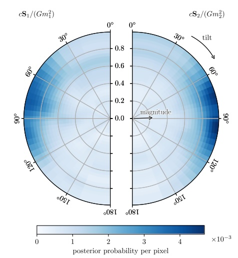
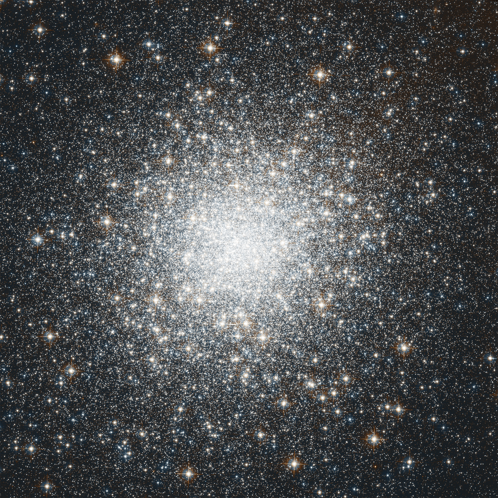

### A Decade Of Gravitational Wave Astronomy: Hundreds of Black Holes and Other Spacetime Oddities [Will M. Farr](https://farr.github.io) Stony Brook University <br /> Center for Computational Astrophysics <br /> <a href="https://github.com/farr/AstroOpenNight20261002"><img src="images/github-mark.svg" height="150" width="150" /></a> <span class="attribution">2026-10-02</span> --- I am an astronomer <img src="images/swope.webp" class="r-stretch" /> <span class="attribution"><a href="https://carnegiescience.edu/instrumentation/our-telescopes">Carnegie Observatories</a></span> --- I am an astronomer who uses gravitational waves to learn about black holes (and the universe) <img src="images/LIGO_hanford.webp" class="r-stretch" /> <span class="attribution"><a href="https://ligo.org/multimedia/">LIGO</a></span> --- <img src="images/LSC.png" class="r-stretch" /> --- What are gravitational waves? <img src="images/Black_hole_merger.webp" height="300" /> <br /> <img class="r-stretch" src="images/pol_ellip.gif" /> <span class="attribution"><a href="https://ligo.org/multimedia/">R. Hurt, Caltech</a>; <a href="https://github.com/maxisi/gwpols">Max Isi</a></span> --- <img src="images/LIGO_hanford.webp" class="r-stretch" /> <span class="attribution"><a href="https://ligo.org/multimedia/">LIGO</a></span> --- <iframe width="560" height="315" src="https://www.youtube-nocookie.com/embed/UA1qG7Fjc2A?si=XtHGZc4tkeMg8mfs" title="YouTube video player" frameborder="0" allow="accelerometer; autoplay; clipboard-write; encrypted-media; gyroscope; picture-in-picture; web-share" referrerpolicy="strict-origin-when-cross-origin" allowfullscreen></iframe> --- $f_{\mathrm{GW},\mathrm{ISCO}} = 200 \\, \mathrm{Hz} \frac{10 M_\odot}{M}$ <!-- .element: class="fragment"--> $h = \mathcal{O}\left(1 \right) \frac{r_\mathrm{Schw}}{r} \simeq 2 \times 10^{-22} \\, \frac{M}{10 M_\odot} \\, \frac{10 Gpc}{r}$ <!-- .element: class="fragment"--> <img class="r-stretch" src="images/detection-figure3.png" /> <span class="attribution"><a href="https://ui.adsabs.harvard.edu/abs/2016PhRvL.116f1102A/abstract">Abbott, et al. (2016)</a></span> --- ## GW150914 <img class="r-stretch" src="images/gw150914-fig1.png" /> <span class="attribution"><a href="https://link.aps.org/doi/10.1103/PhysRevLett.116.061102">Abbott, et al. (2016)</a></span> --- <iframe width="900" height="506" src="https://www.youtube.com/embed/kkKDs59zcdI" title="GW150914: Gravitational waves from LIGO's first detection" frameborder="0" allow="accelerometer; autoplay; clipboard-write; encrypted-media; gyroscope; picture-in-picture; web-share" referrerpolicy="strict-origin-when-cross-origin" allowfullscreen></iframe> <span class="attribution"><a href="https://ligo.org/multimedia/">LIGO / SXS</a></span> --- ## GW170817 <iframe width="891" height="501" src="https://www.youtube.com/embed/-Yt5EmEgz2w" title="Discovery Plot: GRB170817A" frameborder="0" allow="accelerometer; autoplay; clipboard-write; encrypted-media; gyroscope; picture-in-picture; web-share" referrerpolicy="strict-origin-when-cross-origin" allowfullscreen></iframe> <span class="attribution"><a href="https://ligo.org/multimedia/">LIGO</a></span> --- <iframe width="900" height="506" src="https://www.youtube.com/embed/V6cm-0bwJ98" title="Simulation of the neutron star coalescence GW170817" frameborder="0" allow="accelerometer; autoplay; clipboard-write; encrypted-media; gyroscope; picture-in-picture; web-share" referrerpolicy="strict-origin-when-cross-origin" allowfullscreen></iframe> <span class="attribution"><a href="https://ligo.org/multimedia/">LIGO</a></span> --- Origin of (some of the) heavy elements <p></p> <span class="attribution"><a href="https://svs.gsfc.nasa.gov/13873/">NASA SVS</a></span> --- <img class="r-stretch" src="images/gw170817.png" /> <span class="attribution"><a href="https://iopscience.iop.org/article/10.3847/2041-8213/aa9059">Soares-Santos, et al. (2017)</a></span> --- <div class="r-stack"> <img src="images/hubble-hubble.png" class="fragment fade-out" data-fragment-index="0" /> <img src="images/hubble-gw.png" class="fragment" data-fragment-index="0" /> </div> <span class="attribution"><a href="http://www.nature.com/articles/nature24471">Abbott, et al. (2017)</a>; <a href="https://doi.org/10.1073/pnas.15.3.168">Hubble (1929)</a></span> --- By Now, This Is Becoming "Routine" <p></p> <span class="attribution"><a href="https://ligo.org/science-summaries/o4b_astro_distrib/">LIGO</a>; <a href="https://ui.adsabs.harvard.edu/abs/2026arXiv260527223T/abstract">Abac, et al. (2026)</a></span> --- <a href="https://gracedb.ligo.org/superevents/public/O4/">GraceDB</a> <iframe class="r-stretch" data-src="https://gracedb.ligo.org/superevents/public/O4/" data-preload /> --- Focus on the most massive black holes here: <span class="attribution"><a href="https://ligo.org/science-summaries/o4b_astro_distrib/">LIGO</a>; <a href="https://ui.adsabs.harvard.edu/abs/2026arXiv260527223T/abstract">Abac, et al. (2026)</a></span> --- They shouldn't exist. <p></p> <span class="attribution"><a href="https://en.wikipedia.org/wiki/SN_2006gy">Wikipedia: SN 2006gy</a></span> --- At First, We Thought They Didn't <p></p> <span class="attribution"><a href="https://ui.adsabs.harvard.edu/abs/2017ApJ...851L..25F/abstract">Fishbach & Holz (2017)</a></span> --- But GW190521 and GW231123 Changed Our Minds <p></p> <span class="attribution"><a href="https://ui.adsabs.harvard.edu/abs/2025ApJ...993L..25A/abstract">Abac, et al. (2025)</a></span> --- These Are Unusual Objects in Other Ways, Too <p></p> <span class="attribution"><a href="https://ui.adsabs.harvard.edu/abs/2020PhRvL.125j1102A/abstract">Abbott, et al. (2020)</a></span> --- And That Holds A Clue (Maybe?) For How They Form <p></p> <span class="attribution"><a href="https://en.wikipedia.org/wiki/Messier_2">Wikipedia: Messier 2</a></span> --- This is Only the Beginning of GW Astrophysics - [Pulsar Timing Arrays](https://nanograv.org) <!-- .element: class="fragment" --> - [Cosmic Explorer](https://cosmicexplorer.org) <!-- .element: class="fragment"--> - [LISA](https://lisa.nasa.gov) <!-- .element: class="fragment" --> <br />